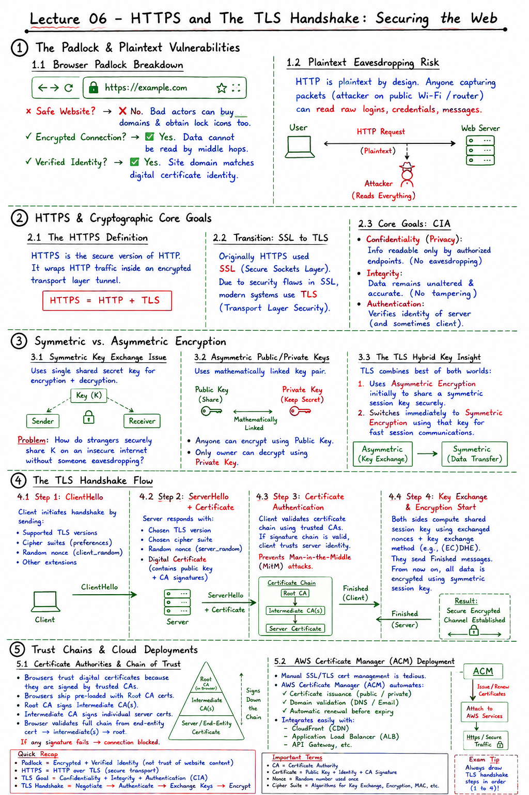

Short Notes & Visual Summary
Handwritten / quick summary notes for Lecture 06:

Click image to open high-resolution version in new tab
The Padlock, Plaintext Risks & HTTP Evolution
1.1 Browser Padlock Breakdown
What does the padlock icon (🔒) in your browser address bar actually mean?
- Safe Website? ❌ No. Bad actors can buy domains and obtain secure lock icons too.
- Encrypted Connection? ✅ Yes. Data cannot be read by middle hops or eavesdroppers.
- Verified Identity? ✅ Yes. The site domain matches the authenticated digital certificate identity issued by a trusted Certificate Authority.
1.2 Plaintext Eavesdropping Risk
Standard HTTP is plaintext by design. If you send data using regular HTTP, anyone capturing network packets (such as an attacker on public Wi-Fi or an intermediary router operator) can read passwords, session cookies, personal identity data, and credit card numbers without restriction.
1.3 HTTP Protocol Stack Evolution (HTTP/1.0 to HTTP/3)
To address security, latency, and transport bottlenecks, HTTP evolved across the protocol stack as follows:
| Protocol Version | Application Data Layer | Security & Transport Stack | Key Technical Characteristic |
|---|---|---|---|
| HTTP/1.0 / 1.1 | Plaintext Text Data | Directly over TCP | Unencrypted (port 80) or optional SSL wrapper; suffers from Head-of-Line (HoL) blocking across separate connections. |
| HTTP/2 | Stream Abstraction & Binary Framing | Over TLS / TCP | Multiplexes multiple streams over a single TCP connection; header compression (HPACK); mandated TLS encryption in browsers. |
| HTTP/3 | Stream Abstraction & Multistreaming | Over QUIC / UDP | Replaces TCP with QUIC; embeds TLS 1.3 handshake natively; eliminates TCP-level Head-of-Line blocking; supports 0-RTT connection resumption. |
HTTPS & Cryptographic Core Goals
2.1 The HTTPS Definition
HTTPS is the secure implementation of HTTP. It encapsulates standard HTTP request and response messages inside an encrypted cryptographic tunnel (operating over standard TCP port 443):
2.2 Transition: SSL to TLS
Historically, secure communications used SSL (Secure Sockets Layer) developed by Netscape in the 1990s. Due to serious cryptographic vulnerabilities discovered in SSL 2.0 and SSL 3.0 (e.g., POODLE attack), SSL was formally deprecated. Modern systems use the updated and standardized successor: TLS (Transport Layer Security), currently at TLS 1.2 and TLS 1.3.
2.3 Core Goals: Confidentiality, Integrity, Authentication
Secure web communications depend on three fundamental security guarantees:
- Confidentiality (Privacy): Guarantees that transmitted data is readable only by authorized endpoints ("No eavesdropping"). Even if an attacker captures the packets, they see only indecipherable ciphertext.
- Integrity: Guarantees that data cannot be altered or injected in transit ("No tampering"). Verified through cryptographic message authentication codes (MACs).
- Authentication: Confirms that the communicating party is who they claim to be ("No impersonation"). Ensures clients connect to the authentic server and not a rogue intermediary.
Symmetric vs. Asymmetric Encryption
3.1 Symmetric Key Exchange Issue
Symmetric Encryption uses a single shared secret key for both encryption and decryption (e.g., AES-128, AES-256):
- Advantage: Extremely fast, lightweight, and hardware-accelerated.
- Critical Dilemma: How can a browser and a web server securely share this secret key across an untrusted, public internet without an eavesdropper intercepting the key as it is being sent?
3.2 Asymmetric Public/Private Keys
Asymmetric Encryption (Public-Key Cryptography) solves the key distribution paradox using a mathematically bound pair of keys (e.g., RSA, ECC):
- Public Key: Freely published to the world. Anyone can use the public key to encrypt a message intended for the server.
- Private Key: Kept strictly secret on the server. Only the private key can decrypt messages that were encrypted with its matching public key.
- Limitation: Asymmetric cryptographic algorithms require intense mathematical computations (modular exponentiation or elliptic curve arithmetic), making them roughly 1,000 times slower than symmetric ciphers.
3.3 The TLS Hybrid Key Insight
TLS ingeniously combines the security of asymmetric encryption with the raw speed of symmetric encryption:
- Use Asymmetric Encryption during the initial handshake to authenticate the server and securely exchange the foundation for a secret key.
- Both sides derive a shared Symmetric Session Key.
- Immediately switch to Symmetric Encryption using that session key to encrypt all subsequent high-volume application payload data (HTML, JSON, media).
The TLS Handshake & Session Key Derivation
The TLS Handshake establishes cryptographic parameters before any HTTP data is transmitted:
4.1 Step 1: ClientHello (Cipher Suites & 32-Byte Nonce)
The client initiates the handshake by transmitting a ClientHello message containing:
- Supported TLS protocol versions (e.g., TLS 1.2, TLS 1.3).
- An ordered list of supported cipher suites (e.g.,
TLS_ECDHE_RSA_WITH_AES_128_GCM_SHA256). - A 32-byte cryptographic random nonce (client_random) used to prevent replay attacks and ensure unique session keys.
4.2 Step 2: ServerHello + Digital Certificate
The server replies with a ServerHello message containing:
- The selected TLS protocol version and chosen cipher suite.
- Its own 32-byte cryptographic random nonce (server_random).
- The server's Digital Certificate, which contains the server's identity and its Public Key.
4.3 Step 3: Certificate Authentication
The client's browser verifies the digital certificate against its local OS trust store:
- Validates the issuing Certificate Authority (CA) digital signature.
- Verifies the domain name matches (e.g.,
*.canva.com). - Confirms the certificate has not expired or been revoked.
4.4 Step 4: Key Exchange & Session Key Derivation
- The client generates a random Pre-Master Secret, encrypts it using the server's verified Public Key, and sends it to the server. (In modern (EC)Diffie-Hellman handshakes, client and server exchange ephemeral public parameters instead).
- The server decrypts the Pre-Master Secret using its Private Key.
- Key Derivation: Both client and server now independently compute the exact same symmetric session key using the combination of: $$\text{Session Key} = \text{PRF}(\text{Pre-Master Secret}, \text{client\_random}, \text{server\_random})$$
- Both sides exchange encrypted
Finishedmessages confirming successful setup. All subsequent application data is encrypted symmetrically using this session key.
Digital Certificates, Trust Chains & AWS ACM
5.1 Digital Certificate Field Anatomy
A digital certificate binds an organization's public key to their domain name. Standard certificate fields (such as those observed on Canva's SSL certificate) include:
- Subject / Common Name (CN):
*.canva.com(Wildcard certificate protecting all Canva subdomains). - Issuer Name & CA:
Amazon RSA 2048 M04(Issued by Amazon Trust Services). - Validity Period: Activation date and Expiration date (e.g., valid for 13 months).
- Public Key Algorithm & Key: RSA (2048 bits).
- Serial Number: Unique hex identifier issued by the CA to track the certificate.
- Country (C) & Organization (O):
C=US,O=Amazon(Issuer identifiers). - Fingerprint / Thumbprint: Cryptographic SHA-256 hash identifying the certificate document.
5.2 Certificate Authorities (CAs) & Chain of Trust
How does a client know the certificate is authentic?
- Root Certificate Authorities (CAs): Trusted global organizations (e.g., DigiCert, Let's Encrypt, Amazon Trust Services, Sectigo) whose root public keys are pre-installed in browsers and operating systems.
- Chain of Trust: Root CA signs an Intermediate CA certificate, which in turn signs the End-Entity (Server) certificate. Browsers verify the signature path hierarchically up to a trusted root anchor.
5.3 AWS Certificate Manager (ACM) Deployment
In modern cloud engineering, managing SSL/TLS certificates manually is slow and prone to downtime from forgotten expiration renewals:
- AWS Certificate Manager (ACM): A managed AWS service that provisions, manages, and automatically renews public and private SSL/TLS certificates for free.
- Direct Integration: ACM certificates bind seamlessly to AWS cloud resources such as Application Load Balancers (ALB) and Amazon CloudFront CDNs, enabling automated TLS termination at cloud edge locations.
Original PDF Notes
Below is the original PDF document for reference: